Nuestra Historia y Antecedentes Clínicos
Detrás de cada mesa dulce y cada celebración de Pasapalos Dulce y Sal se encuentra el amor, la dedicación y el talento de Nathy. Como apasionada profesional pastelera y también Ingeniero de Sistemas, Nathy ha construido con esfuerzo este espacio donde el buen gusto y el compromiso familiar van de la mano.
Antecedente Médico: Hace aproximadamente 8 años, Nathy fué sometida a una intervención quirúrgica tiroidea realizada exitosamente por el Dr. Juvenal Vargas (Médico Cirujano). Desde entonces, ha mantenido un control riguroso y constante de su salud, consumiendo de forma regular la hormona tiroidea sintética Eutirox para regular sus niveles de hipotiroidismo.
Durante todo este tiempo su evolución fue excelente, hasta que en el mes de julio de 2026 se observó una inflamación notable en la porción de tiroides que le había sido conservada en aquella operación.


Seguimiento Julio / 2026
Ante la inflamación presentada a mediados de año, iniciamos los protocolos de evaluación clínica:
- Evaluación con la Dra. Zaravik Molina: Asistimos a consulta de control endocrinólogo donde la especialista interpretó los exámenes de laboratorio y la ecografía inicial de julio de 2026.
- Ajuste Terapéutico: Debido a que los valores hormonales presentaban ciertas alteraciones, la Dra. Molina ajustó la dosis de Eutirox con el propósito de estabilizar el organismo y preparar a Nathy de cara a la punción planificada para septiembre.
- Estudios Ecográficos: Monitoreo detallado de los cambios en el tejido remanente.
Haz clic en cualquier miniatura de la derecha para detallar los informes y estudios originales de este período.
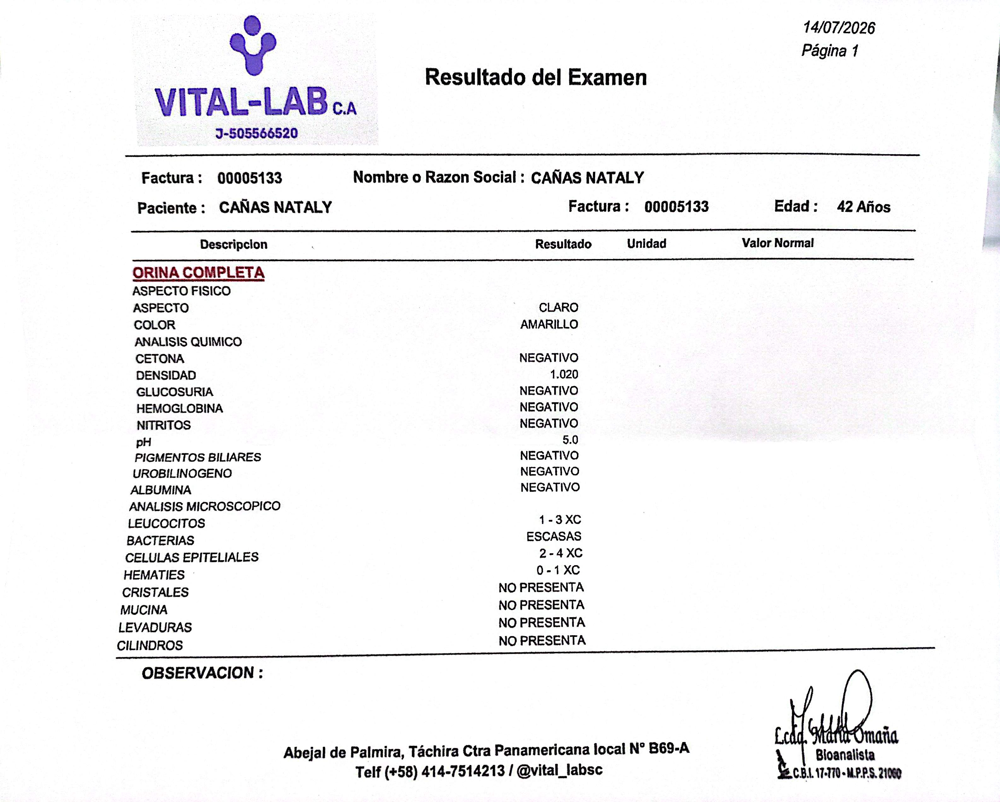
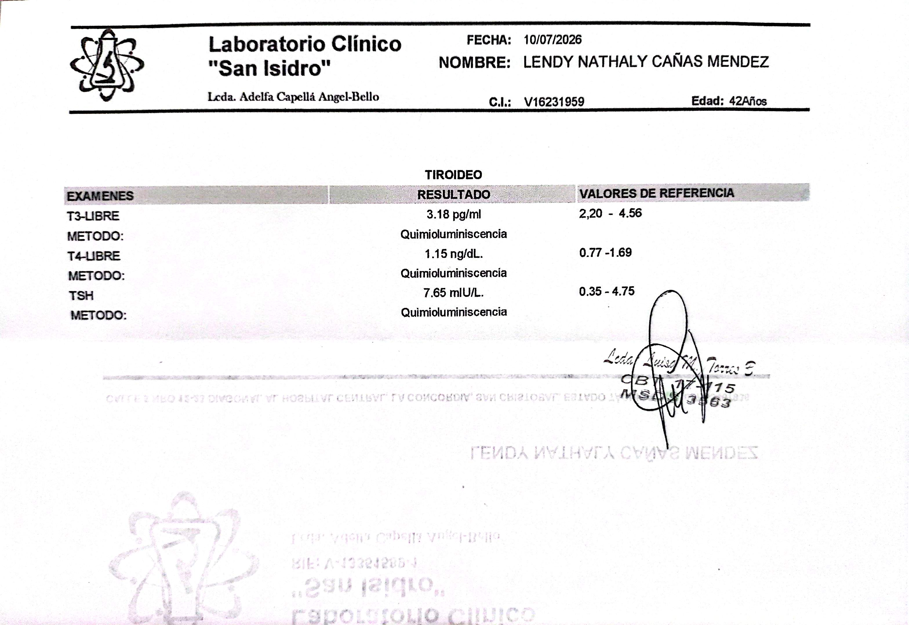
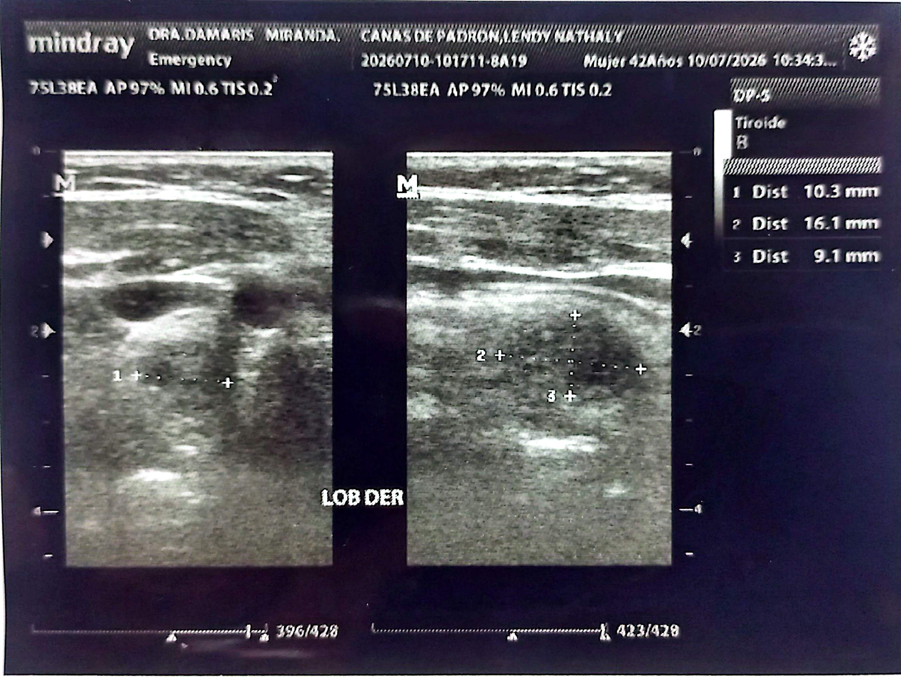
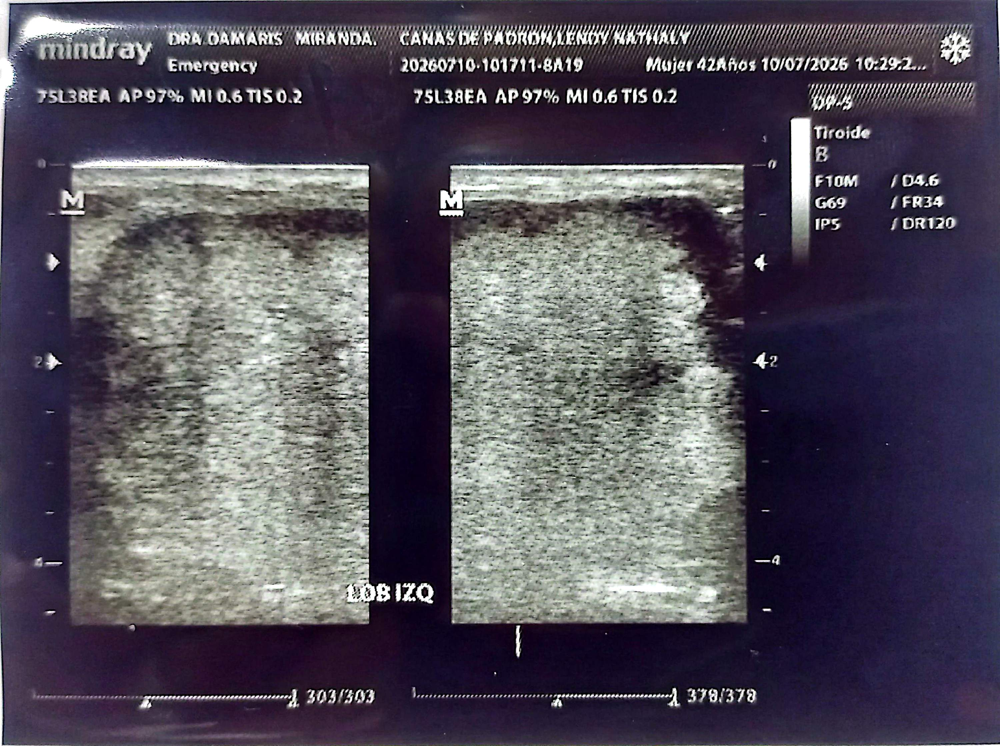
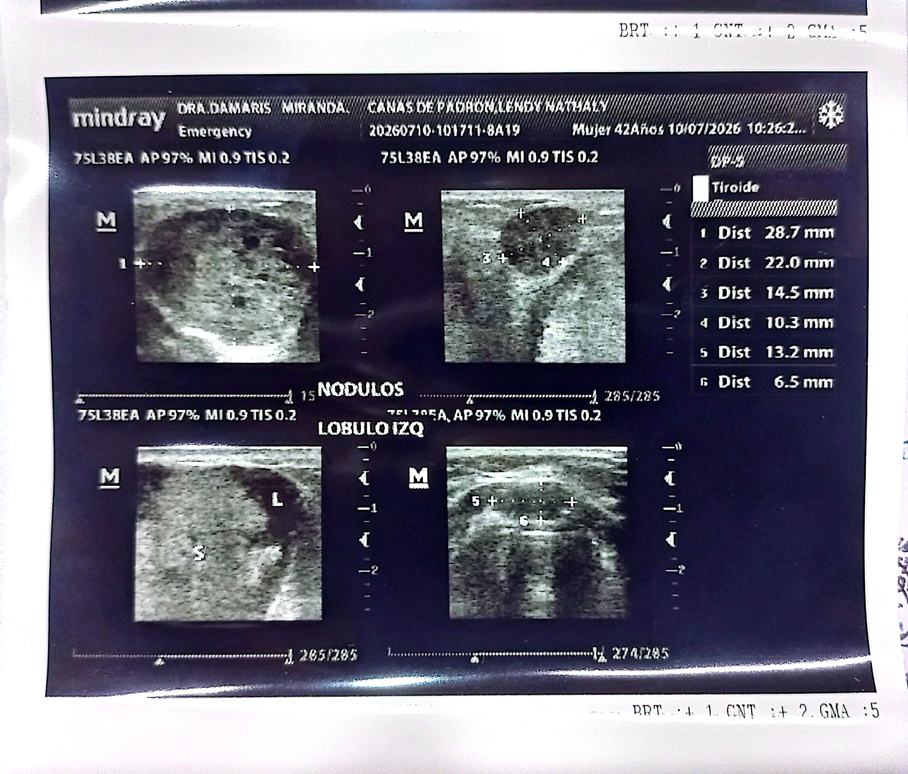
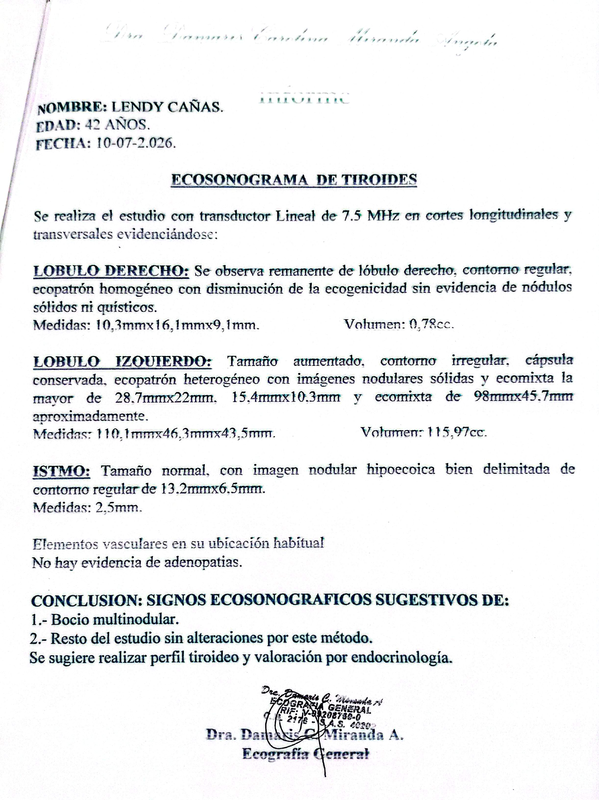
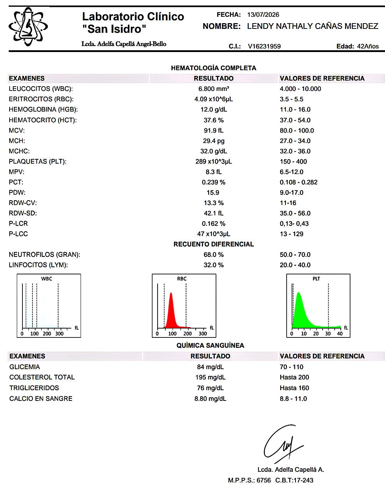
Estado Actual y Transparencia
Mantener una total claridad sobre los recursos es nuestro compromiso fundamental con cada persona que decide sumarse a este apoyo. A continuación, presentamos el desglose de los gastos médicos y las etapas presupuestarias:
| Concepto / Gasto Médico | Fase / Fecha Estimada | Estado |
|---|---|---|
| Consultas y Perfiles Hormonales (Laboratorios) | Julio 2026 | Completado |
| Ecosonogramas y Monitoreo Inicial | Julio - Septiembre 2026 | Completado |
| Consulta Especializada Endocrinología y Punción | Septiembre 2026 | Completado |
| Procesamiento de Muestras Patológicas (Biopsias) | Entrega: 09/10/2026 | En Proceso |
| Evaluación Quirúrgica y Presupuesto | Próxima Fase | En Curso |
| Intervención Quirúrgica y Clínica | Por Programar | Pendiente |
| Postoperatorio, Reposo (~21 días) y Controles Endocrinológicos | Fase Posterior a la Cirugía | Pendiente |
Seguimiento Septiembre / 2026
Durante septiembre de 2026 avanzamos de manera significativa en las evaluaciones clínicas determinantes:
- Punción para la extraer muestra: Realizada el 28/09/2026 por el Dr. Luis Ernesto Jaimes (Médico Internista Endocrinólogo) para extraer muestras de los nódulos y enviarlas al laboratorio patológico. Los resultados previstos los obtendremos para el 09/10/2026.
- Evaluación Quirúrgica: Martes 29/09/2026 Reencuentro en consulta con el Dr. Juvenal Vargas (Médico Cirujano) para valorar opciones y procedimientos, confirmando las directrices de la intervención y emitiendo el informe técnico respectivo.
- Controles Ecográficos: Actualización de estudios y analíticas complementarias.
Haz clic en cualquier miniatura de la derecha para verificar los exámenes, ecos e informes de este período.
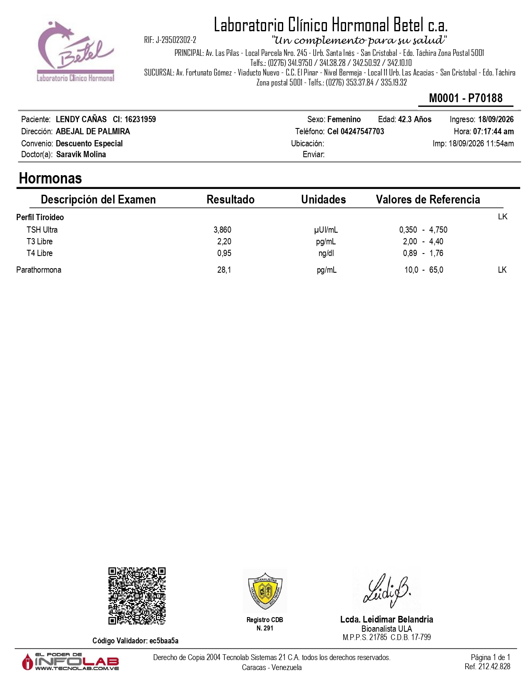
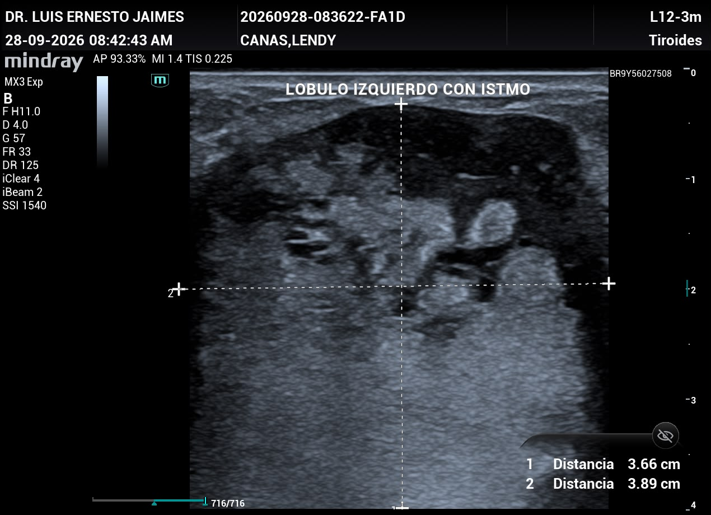
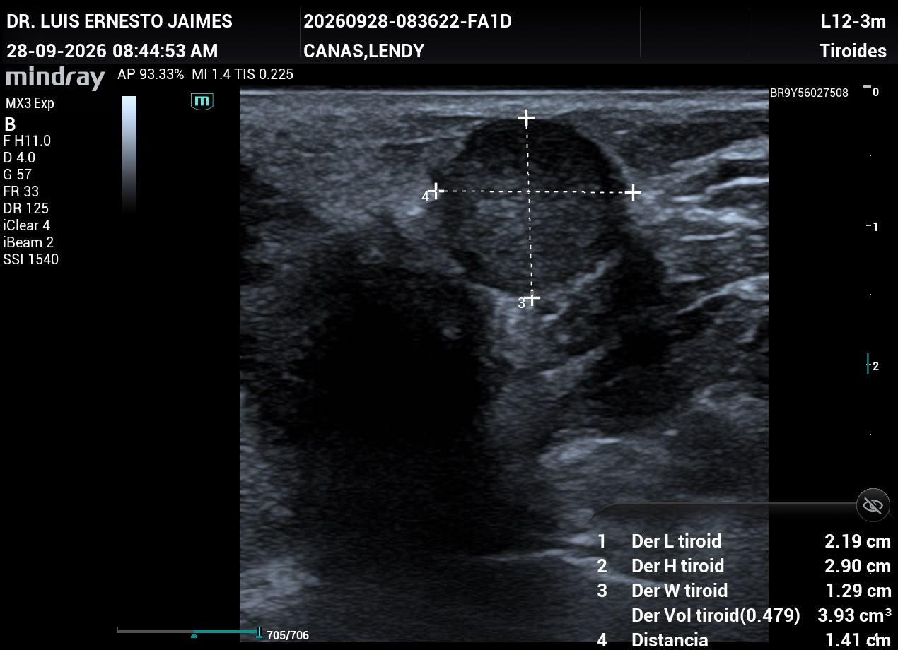
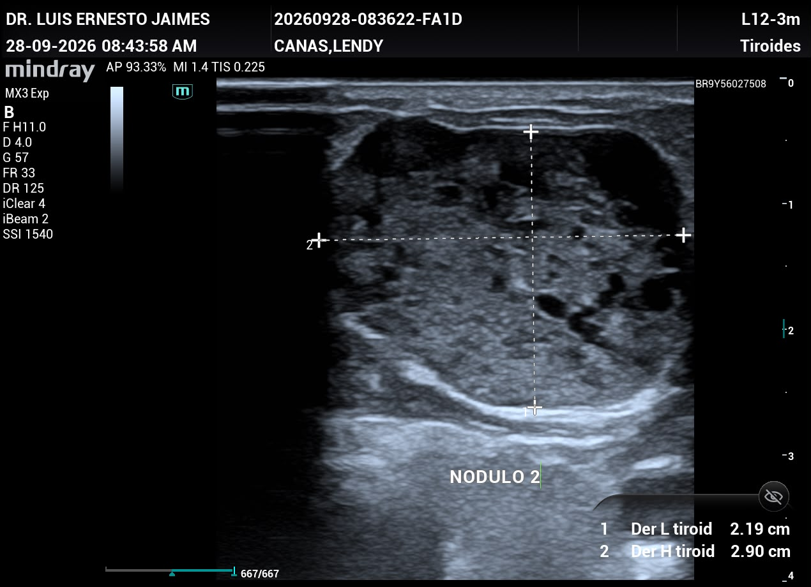
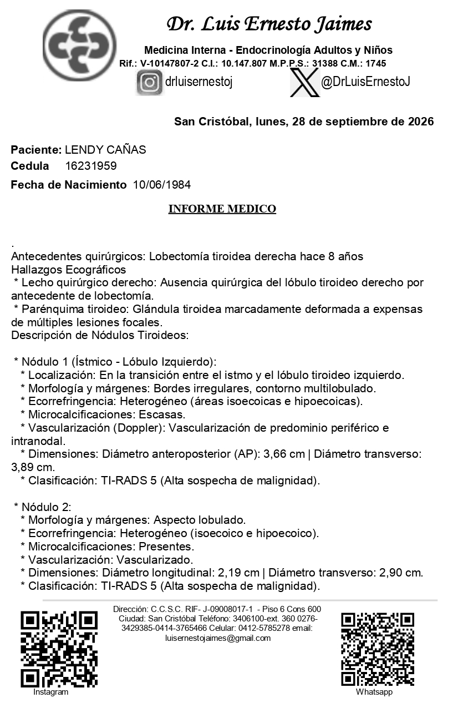
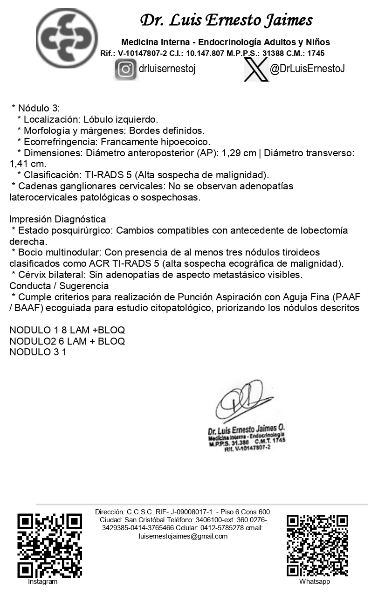
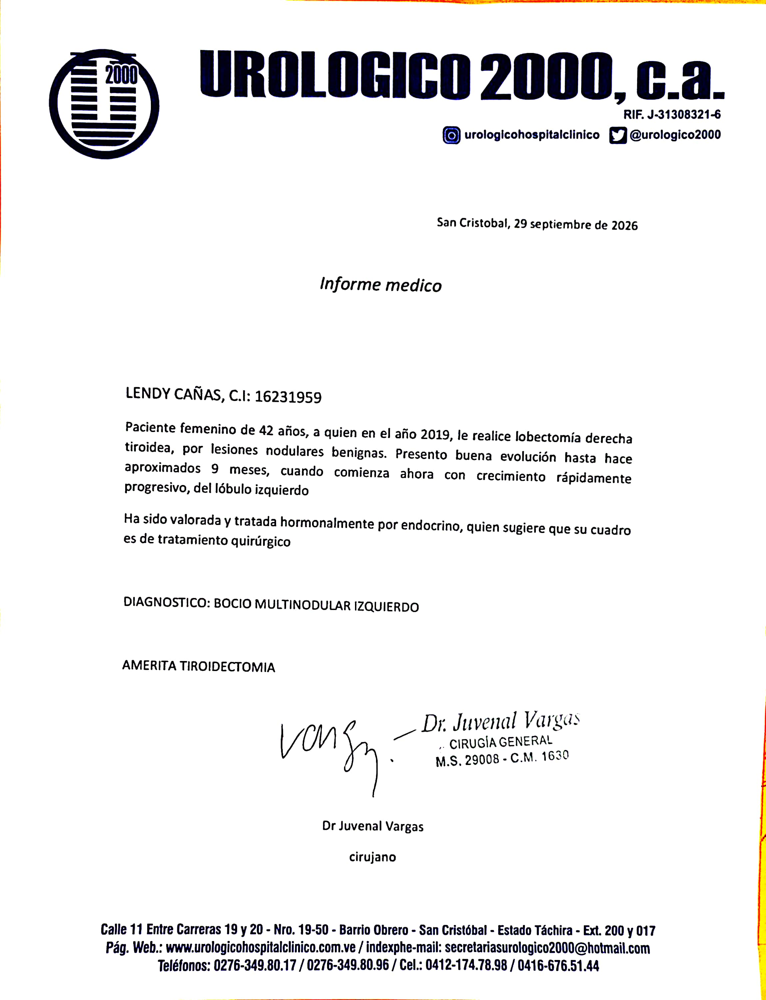
Formas de Colaborar y Aportes Voluntarios
🇻🇪 Cuenta en Venezuela
- Banco: Banco de Venezuela
- Método: Pago Móvil
- Cédula: V-16231959
- Teléfono: 0424-7547703
🇨🇴 Cuenta en Colombia
- Banco: Bancolombia
- Tipo: Ahorro
- Nro. Cuenta: 08800023285
- Titular: Rafael E. Padrón R.
🇺🇸 Zelle
- Nombre: Eduardo Padrón
- Correo: epadron1981@gmail.com
🌐 Binance (USDT)
- Nombre: Nathy Méndez
- Correo: lenatca@gmail.com
¿Deseas más información, colaborar con la campaña?
Contáctanos directamente a través de nuestros números: